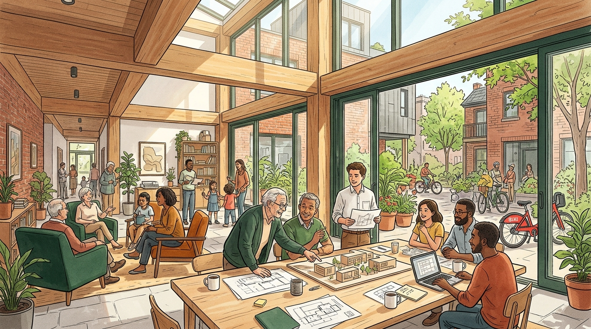

1. Réglementation & Zonage
Dialogue avec la Ville de Montréal et les urbanistes : révision de la qualification d'usage, allègement des contraintes de stationnement automobile et création d'une désignation officielle pour la colocation collaborative.
Coliving, habitat partagé et communautés intentionnelles
Faire du coliving et de l'habitat partagé une option résidentielle crédible, normalisée et accessible au Québec et au-delà. Deux jours d'échanges institutionnels et d'ateliers collaboratifs pour décloisonner le zonage municipal, débloquer le financement solidaire et protéger le logement de la spéculation.

Face à la crise du logement, à l'isolement social et aux dérèglements climatiques, les porteurs de projets d'habitats partagés se heurtent encore à des verrous administratifs, bancaires et assurantiels obsolètes.
« En raison de réglementations municipales mal adaptées qui assimilent trop souvent ces initiatives à des maisons de chambres, et de la difficulté d'obtenir du financement pour des structures de propriété non traditionnelles, les porteurs de projets évoluent fréquemment dans une zone grise avec de lourdes conséquences sur la viabilité de leurs initiatives. »
Faire évoluer le cadre normatif municipal pour adapter le zonage urbain et sortir de la classification automatique en maison de chambres qui bloque les permis et paralyse les projets.
Structurer des mécanismes de capitalisation pérennes : obligations communautaires, garanties d'emprunt solidaire et fonds d'acquisition d'immeubles avec nos partenaires de l'économie sociale.
Mobiliser les juristes et notaires autour des montages juridiques protecteurs : fiducies d'utilité sociale (FUS), baux emphytéotiques et coopératives hybrides pour déspéculer le foncier à perpétuité.
Chaque axe rassemble des intervenants institutionnels de premier plan et des praticiens de terrain pour dépasser les constats et livrer des guides pratiques.
Dialogue avec la Ville de Montréal et les urbanistes : révision de la qualification d'usage, allègement des contraintes de stationnement automobile et création d'une désignation officielle pour la colocation collaborative.
Collaboration avec la Caisse d'économie solidaire Desjardins, l'ACHAT et UTILE : émission d'obligations communautaires, modèles de fonds de roulement et garanties collectives pour l'acquisition d'immeubles.
Notaires et juristes spécialisés : baux emphytéotiques, fiducies d'utilité sociale (FUS) foncières, conciliation des règlements d'immeuble et cohabitation harmonieuse de plusieurs entités morales (OBNL, coopérative, copropriété).
Courtiers et assureurs commerciaux : adapter les polices d'assurance collective aux espaces partagés (cuisines mutualisées, ateliers de réparation vélo, fablabs) et lever les refus de couverture arbitraires.
Une formule hybride (présentiel à Montréal + virtuel) et bilingue (français/anglais) combinant cadrage institutionnel et intelligence collective auto-gérée.
Retours d'expérience concrets d'initiatives en activité au Québec et à l'international (Lykkå, Nomad Coliving, Oasis coliving, cohabitat.cc).
Tables rondes ciblées : zonage municipal avec les urbanistes, montage d'obligations d'impact avec Desjardins et verrouillage foncier FUS.
Réseautage informel sur le site d'un espace de coliving ou d'une colocation collaborative existante à Montréal.
Les participants proposent et votent sur place pour les sujets prioritaires à approfondir : gouvernance humaine, plans d'affaires, charte de vie collective.
Sessions collaboratives dynamiques, rédaction de fiches de solutions et prototypage d'outils ouverts pour la communauté de pratique.
Partage des livrables en plénière, célébration collective et consolidation des liens durables pour la suite du mouvement.
Un événement indépendant co-porté par des pionniers du coliving, de l'habitat partagé et des communs urbains au Québec.
OBNL d'ingénierie civique et pré-développement dédiée aux habitats écologiques partagés, à la déspéculation foncière et à la mobilité active zéro auto.
Visiter cohabitat.cc →Pionnier de la cohabitation et de la facilitation participative au Québec, dédié à la création d'espaces de vie partagés fondés sur l'entraide et la gouvernance collégiale.
Visiter lykka.org →Premier espace de coliving pour nomades numériques et professionnels flexibles au Canada, laboratoire d'hospitalité partagée et de vie collective à Montréal.
Visiter nomadcoliving.com →Conseil stratégique en développement durable pour les organisations, et porteur du projet innovant d'habitat écologique Oasis coliving à Montréal.
Profil Thomas Marin →
cohabitat.cc
Architecte de systèmes civiques chez HABILE.ca, fondateur de Coderbunker, ex-Google. Spécialisé en modélisation financière et open source pour le logement hors marché.
LinkedIn →Maillon Vert & Oasis Coliving
Consultant en développement durable chez Maillon Vert et entrepreneur social. Initiateur du projet Oasis coliving à Montréal, alliant écoresponsabilité et inclusion.
LinkedIn →Lykkå Cohabitation
Fondatrice de Lykkå et vice-présidente de Lykkå Cohabitation. Plus de 25 ans d'expertise en facilitation de communautés et gouvernance participative.
LinkedIn →Nomad Coliving & Octo D
Co-fondatrice de Nomad Coliving (1er coliving nomades au Canada) et fondatrice d'Octo D. Consultante en ingénierie pédagogique et expérience utilisateur.
LinkedIn →Nous mobilisons activement les acteurs clés du logement social, des fiducies foncières, de la recherche et de la transition urbaine :
Que vous soyez porteur de projet, élu municipal, bailleur de fonds, juriste ou futur résident, faites entendre votre voix et contribuez à définir l'ordre du jour du forum.
Des réponses claires sur le positionnement, les modalités d'accès et l'esprit de co-construction.
Les règlements municipaux québécois ont été pensés pour un découpage binaire : le logement unifamilial traditionnel ou la maison de chambres à baux individuels. Le coliving moderne et l'habitat partagé reposent au contraire sur des baux collectifs, une gouvernance partagée, de vastes espaces de vie mutualisés (cuisines, ateliers, espaces de cotravail) et une forte dimension communautaire. Le Forum vise précisément à expliquer ces nuances aux législateurs et à créer des catégories d'urbanisme adaptées.
Le forum est ouvert à toute personne ou organisation intéressée par l'innovation en habitat : porteurs de projets émergents, résidents actuels de colocations, urbanistes, promoteurs sans but lucratif, conseillers municipaux, notaires, assureurs, banquiers et citoyens curieux. Une attention particulière est portée à la diversité des profils et des régions.
Contrairement aux conférences classiques descendantes, l'Unconference permet aux participants de co-créer l'ordre du jour le matin même. Chacun peut proposer un atelier pratique, une étude de cas ou une table ronde. Les participants se répartissent librement selon la « loi des deux pieds » pour maximiser l'apprentissage et la production d'outils concrets.
Oui, le Forum Habiter Ensemble adopte une formule résolument inclusive et bilingue. Les plénières et les ateliers accueilleront des interventions en français et en anglais avec support visuel bilingue pour faciliter les échanges avec nos partenaires pancanadiens et internationaux.
Remplissez le formulaire d'intérêt en cochant « Partenariat institutionnel / Soutien financier » ou écrivez directement à joindre@cohabitat.cc. Nous serons ravis de planifier un appel d'arrimage pour explorer ensemble les modalités de collaboration et de visibilité.